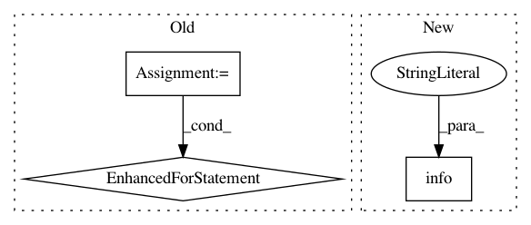

d04c9e9ba382be370eba671b6e5efc3403e24d6c,research/object_detection/builders/dataset_builder.py,,read_dataset,#,109
Before Change
tf.logging.info("Sampling from datasets %s with weights %s" %
(input_files, config.sample_from_datasets_weights))
records_datasets = []
for input_file in input_files:
records_dataset = _read_dataset_internal(file_read_func, [input_file],
config, filename_shard_fn)
records_datasets.append(records_dataset)
dataset_weights = list(config.sample_from_datasets_weights)
return tf.data.experimental.sample_from_datasets(records_datasets,
dataset_weights)
else:
After Change
if num_readers == 0:
tf.logging.info("Skipping dataset due to zero weights: %s", input_file)
continue
tf.logging.info(
"Num readers for dataset [%s]: %d", input_file, num_readers)
records_dataset = _read_dataset_internal(file_read_func, [input_file],
num_readers, config,
filename_shard_fn)
dataset_weights.append(weight)
In pattern: SUPERPATTERN
Frequency: 3
Non-data size: 3
Instances
Project Name: tensorflow/models
Commit Name: d04c9e9ba382be370eba671b6e5efc3403e24d6c
Time: 2021-01-25
Author: yonib@google.com
File Name: research/object_detection/builders/dataset_builder.py
Class Name:
Method Name: read_dataset
Project Name: tensorflow/tpu
Commit Name: 71900d314ad4e503f80e67b6a67be42c8b92f9ee
Time: 2020-05-12
Author: pengchong@google.com
File Name: models/official/detection/executor/tpu_executor.py
Class Name: TpuExecutor
Method Name: evaluate
Project Name: GoogleCloudPlatform/healthcare
Commit Name: db2a9d3a62e36db12066c980d180377fffb31fcc
Time: 2018-11-29
Author: noreply@google.com
File Name: deploy/rule_generator/rule_generator.py
Class Name:
Method Name: run